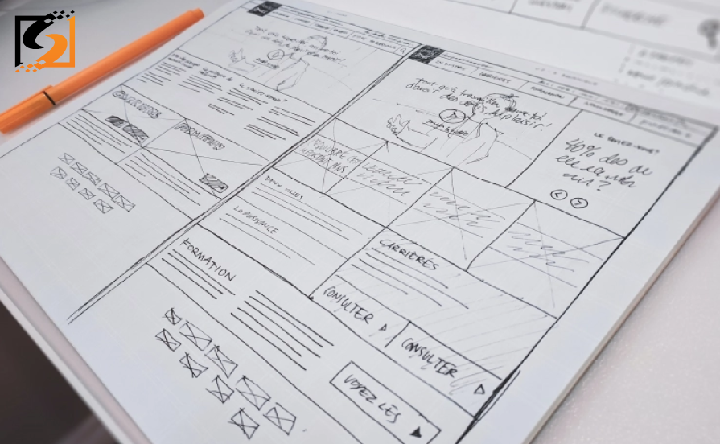

Conversion-Focused Web Design Tips and Tricks
Numerous experiments have proven that simplifying site interface, reducing the number of actions that a user needs to take, and other visual tricks contribute to increased customer loyalty and boosted site conversion. Properly designed and well-tested websites perform better than their second-rate counterparts and bring more value to the business. Of course, we all perceive information differently, but there are some basic UX recommendations that help you improve user experience and web journey. So whether you are building a website from scratch, going to do mobile testing with Grid Dynamics IT Solutions, or aim to optimize your online platform, the below tricks will come in handy.
#1 - Improve Navigation
If the site is easy to navigate, then the likelihood that users find the information they need or buy the product increases. When creating a site information architecture, make sure that the navigation is clear:
- Create an informative main menu that covers all key sections of your site, such as “Products,” “Services,” “Contact Us,” “About Us,” etc. Do not forget to add “Prices” to the menu since most users search for this page;
- Make additional internal menus. However, it is important to find the balance, without overloading the main page with unnecessary panels;
- Highlight the item where the user is at the moment. People “walk” between pages and may forget where they have already been before. So don't let them get lost;
- If you plan to increase the conversion of your online store through the website design, make sure to add “Add to Cart,” “Contact us” buttons, and other tools for generating leads.
#2 - Use Original Photos/b>
Contact a photographer or a web designer to find distinctive images that grab attention and differ from everything that photo stocks have to offer. People trust websites with original photographs. Seeing images that are not available anywhere on the Internet, users understand that you have put a lot of effort into the design and optimization of the site. This inspires respect, gently nudges people towards targeted action, and helps increase conversions through your website design. Unique pictures also contribute to the optimization of the site and its high rating by search engines.
#3 - Be Careful With Banners
Customers treat ads like visual trash. This is annoying, so you need to think twice about whether to use a banner or not. Of course, having a couple of banners on the site won’t hurt. But it is better to order rendering from experienced designers who know a lot about visual storytelling and know how to attract attention with a minimum of visual means. When typesetting articles, put banners at the end. Do not break the text with visuals. Users will be distracted by a bright picture. They may think that it is the end of an article and will not finish reading. This will impair lead generation indirectly. If the banner is at the bottom, it will be noticed by those who are definitely interested in the topic of advertising and will convert well.
#4 - Make a Choice for Your Customers
Users do not like intrusiveness, but they like to be respected and can be smoothly led to the desired action. If people are not hinted at a product or service, they will perceive the site as a sequence of pictures and not as a store. To grab people's attention and increase conversions through your website design, perform the below:
- Compile a selection of products with similar characteristics;
- Make recommendations/ suggestions for a user based on one’s online behavior and recently visited pages;
- Add bright tags “Hit,” “Discounts,” “New,” “Try Now.” This increases sales;
- Use social proof, for example, post reviews from other users.
#5 - Gamify Content & Visuals
Gamification is the introduction of gaming on non-gaming sites. People love to play because the game is relaxing and creates positive emotions that will be associated with your brand. An engaged user is a ready-made customer, and it will be difficult for your competitors to win you in this “battle.”
How to Measure Web Design Performance?
There are different tools that you can use to measure the design performance of your site. You can always resort to GA tools, different heatmaps, or A/B tests. Thus, you will get an idea of how many leads a particular page generates, how far a user scrolls your site down, and what design elements convert to the max. It is important that you do not forget about conversion-focused web design and follow the tricks mentioned above.